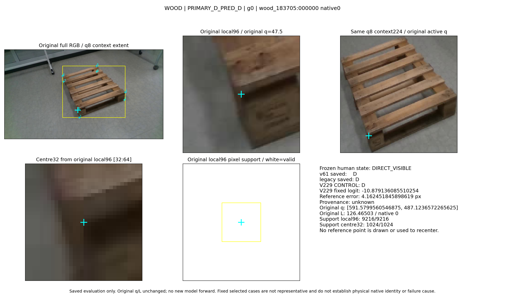
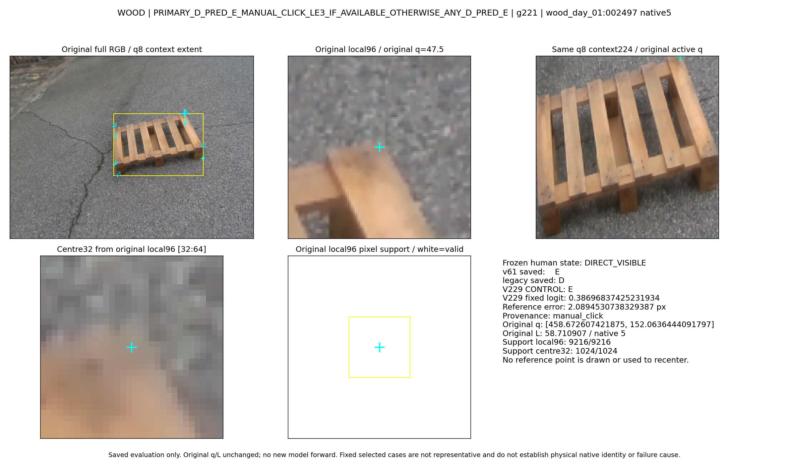
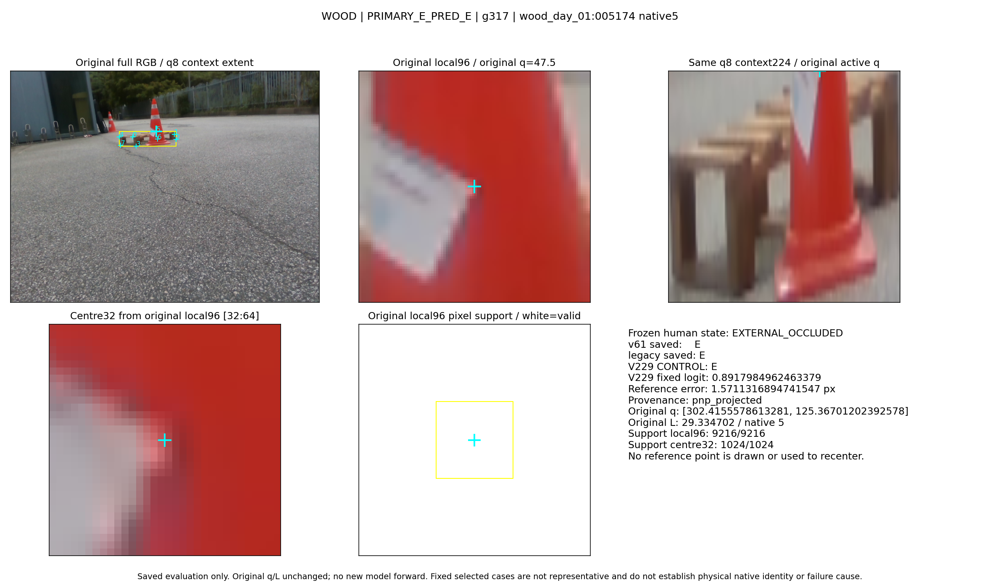
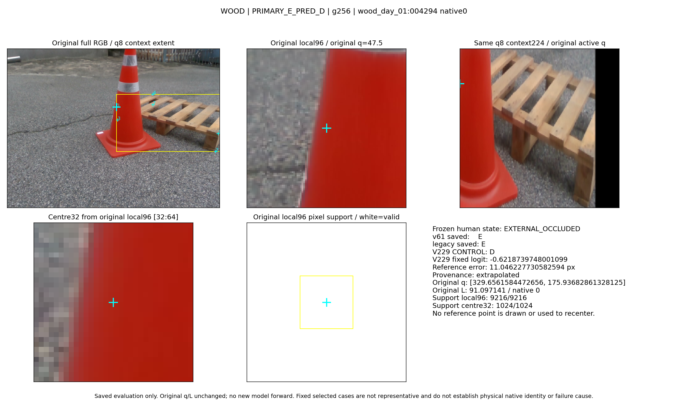
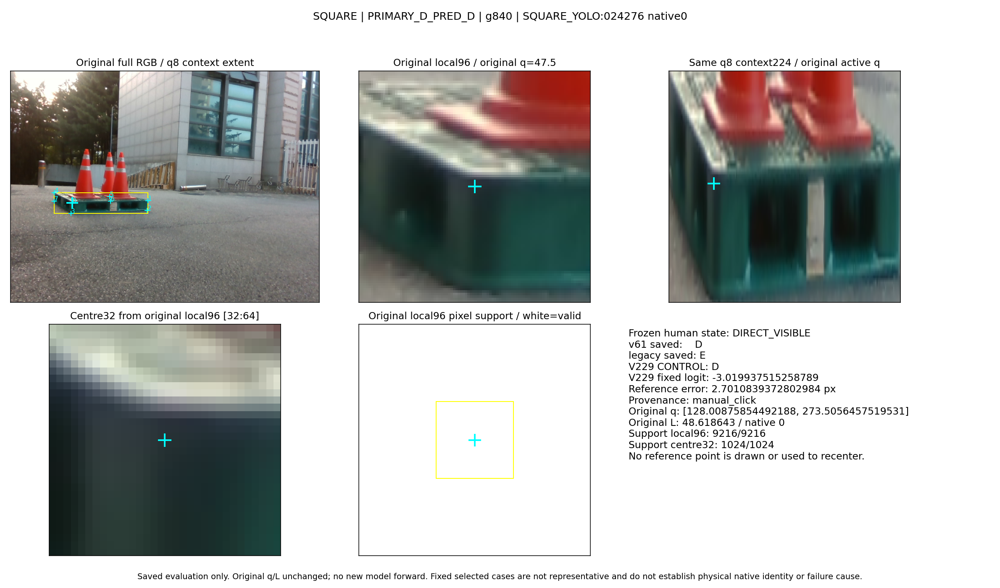
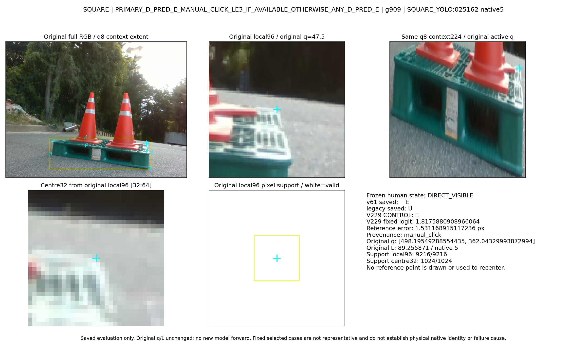
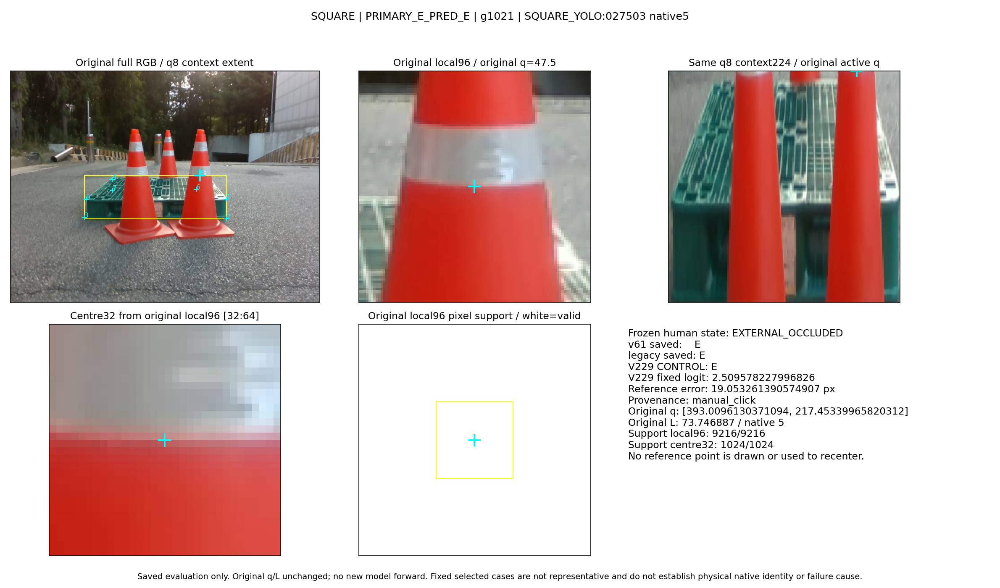
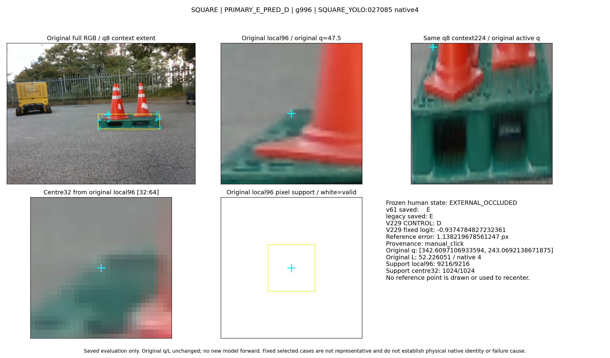

고정 정책의 저장 사례
원 q/L/native 유지. GT reference로 recenter하지 않았습니다. 3개 모델의 저장 응답이며 새 forward는 없습니다. 사례는 대표성·원인·물리 native gold를 증명하지 않습니다.
영상 전 고정 case IDs · 저장 수치/표시 근거

WOOD / PRIMARY_D_PRED_D; g0
WOOD / PRIMARY_D_PRED_E_MANUAL_CLICK_LE3_IF_AVAILABLE_OTHERWISE_ANY_D_PRED_E; g221
WOOD / PRIMARY_E_PRED_E; g317
WOOD / PRIMARY_E_PRED_D; g256
SQUARE / PRIMARY_D_PRED_D; g840
SQUARE / PRIMARY_D_PRED_E_MANUAL_CLICK_LE3_IF_AVAILABLE_OTHERWISE_ANY_D_PRED_E; g909
SQUARE / PRIMARY_E_PRED_E; g1021
SQUARE / PRIMARY_E_PRED_D; g996빈 bucket: 없음